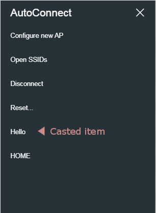

Advanced usage
Advanced usage¶
404 handler¶
Registering the "not found" handler is a different way than ESP8266WebServer (WebServer as ESP32). The onNotFound of ESP8266WebServer/WebServer does not work with AutoConnect. AutoConnect overrides ESP8266WebServer::onNotFound/WebServer::onNotFound to handle a captive portal. To register "not found" handler, use AutoConnect::onNotFound.
Access to saved credentials¶
AutoConnect stores the established WiFi connection in the flash of the ESP8266/ESP32 module and equips the class to access it from the Sketch. You can read, write or erase the credentials using this class individually. It's AutoConnectCredential class which provides the access method to the saved credentials in the flash. Refer to section Saved credentials access for details.
Where to store credentials in ESP32 with AutoConnect v1.0.0 or later
Since v1.0.0, credentials are stored in nvs of ESP32. AutoConnect v1.0.0 or later accesses the credentials area using the Preferences class with the arduino esp-32 core. So in ESP32, the credentials are not in the EEPROM, it is in the namespace AC_CREDT of the nvs. See Saved credentials access for details.
In ESP8266, it is saved in EEPROM as is conventionally done.
Automatic reconnect¶
AutoConnect changes WIFI mode depending on the situation. The AutoConnect::begin function starts WIFI in STA mode and starts the webserver if the connection is successful by the 1st-WiFi.begin. But if the connection fails with the least recently established access point, AutoConnect will switch the WIFI mode to AP_STA and starts the DNS server to be able to launch a captive portal.
When the captive portal is started, SoftAP starts and the STA is disconnected. At this point, the station configuration information that the ESP module has stored on its own (it is known as the SDK's station_config structure) is discarded.
AutoConnect can connect to an access point again using saved credential that has disconnected once, and its control is allowed by autoReconnect. AutoConnectConfig::autoReconnect option specifies to attempt to reconnect to the past established access point that stored in saved credentials. AutoConnect does not start SoftAP immediately even if 1st-WiFi.begin fails when the autoReconnct is enabled. It will scan the WiFi signal, and if the same BSSID as the detected BSSID is stored in flash as AutoConnect credentials, explicitly apply it and reruns WiFi.begin still WIFI_STA mode. (The autoReconnect works effectively even if the SSID is a hidden access point)
AutoConnect Portal;
AutoConnectConfig Config;
Config.autoReconnect = true;
Portal.config(Config);
Portal.begin();
An autoRecconect option is only available for AutoConnect::begin without SSID and PASSWORD parameter.
An autoReconnect is not autoreconnect
The WiFiSTAClass::disconnect function implemented in the arduino-esp32 has extended parameters than the ESP8266's arduino-core. The second parameter of WiFi.disconnect on the arduino-esp32 core that does not exist in the ESP8266WiFiSTAClass has the effect of deleting the currently connected WiFi configuration and its default value is "false". On the ESP32 platform, even if WiFi.disconnect is executed, WiFi.begin() without the parameters in the next turn will try to connect to that AP. That is, automatic reconnection is implemented in arduino-esp32 already. Although this behavior appears seemingly competent, it is rather a disadvantage in scenes where you want to change the access point each time. When explicitly disconnecting WiFi from the Disconnect menu, AutoConnect will erase the AP connection settings saved by the arduino-esp32 core. AutoConnect's automatic reconnection is a mechanism independent from the automatic reconnection of the arduino-esp32 core.
Autosave Credential¶
By default, AutoConnect saves the credentials of the established connection to the flash. You can disable it with the autoSave parameter specified by AutoConnectConfig.
See the Saved credentials access chapter for details on accessing stored credentials.
AutoConnect Portal;
AutoConnectConfig Config;
Config.autoSave = AC_SAVECREDENTIAL_NEVER;
Portal.config(Config);
Portal.begin();
Credentials storage location
The location where AutoConnect saves credentials depends on the module type and the AutoConnect library version, also arduino-esp32 core version.
| AutoConnect | Arduino core for ESP8266 |
Arduino core for ESP32 | |
|---|---|---|---|
| 1.0.2 earlier | 1.0.3 later | ||
| v0.9.12 earlier | EEPROM | EEPROM (partition) | Not supported |
| v1.0.0 later | Preferences (nvs) (Can be used EEPROM with turning off AUTOCONNECT_USE_PREFERENCES macro) |
Preferences (nvs) | |
Captive portal start detection¶
The captive portal will only be activated if 1st-WiFi::begin fails. Sketch can detect with the AutoConnect::onDetect function that the captive portal has started. For example, the Sketch can be written like as follows that turns on the LED at the start captive portal.
AutoConnect Portal;
bool startCP(IPAddress ip) {
digitalWrite(BUILTIN_LED, HIGH);
Serial.println("C.P. started, IP:" + WiFi.localIP().toString());
return true;
}
void setup() {
Serial.begin(115200);
pinMode(BUILTIN_LED, OUTPUT);
digitalWrite(BUILTIN_LED, LOW);
Portal.onDetect(startCP);
if (Portal.begin()) {
digitalWrite(BUILTIN_LED, LOW);
}
}
void loop() {
Portal.handleClient();
}
Captive portal starting control¶
Basically, the captive portal launch is subject to 1st-WiFi.begin result, but Sketch can control it. The Sketch can direct the following four actions by configuring AutoConnect with two parameters, AutoConnectConfig::immediateStart and AutoConnectConfig::autoRise.
| AutoConnectConfig ::immediateStart |
AutoConnectConfig::autoRise | |
|---|---|---|
| true | false | |
| true | Skip 1st-WiFi.begin ESP module becomes SoftAP and the captive portal starts immediately. |
Not attempt WiFi connection. Only WebServer will start in STA mode. |
| false | Attempts WiFi connection in STA mode. In some cases, the autoReconnect may restore the connection even if 1st-WiFiBeing fails. If the connection is completely lost, the captive portal will be launched. This is the default. |
Attempts WiFi connection in STA mode. In some cases, the autoReconnect may restore the connection even if 1st-WiFiBeing fails. ESP module stays in STA mode and WebServer will start. |
Captive portal timeout control¶
Once AutoConnect has entered the captive portal state due to the above conditions, it will not exit until a WiFi connection can be established. (But that is the default behavior)
The Sketch can abort the AutoConnect::begin by setting the captive portal timeout and returns control to Sketch. AutoConnect has two parameters for timeout control. One is a timeout value used when trying to connect to the specified AP. It behaves the same as general timeout control in connection attempt by WiFi.begin. This control is specified by the third parameter of AutoConnect::begin. The default value is macro defined by AUTOCONNECT_TIMEOUT in the AutoConnectDefs.h file.
The other timeout control is for the captive portal itself. It is useful when you want to continue sketch execution with offline even if the WiFi connection is not possible. You can also combine it with the immediateStart option to create sketches with high mobility.
The timeout of the captive portal is specified together with AutoConnectConfig::portalTimeout as follows.
#include <ESP8266WiFi.h>
#include <ESP8266WebServer.h>
#include <AutoConnect.h>
AutoConnect portal;
AutoConnectConfig config;
void setup() {
config.portalTimeout = 60000; // It will time out in 60 seconds
portal.config(config);
portal.begin();
}
void loop() {
if (WiFi.status() == WL_CONNECTED) {
// Some sketch code for the connected scene is here.
}
else {
// Some sketch code for not connected scene is here.
}
portal.handleClient();
}
bool acEnable;
void setup() {
config.portalTimeout = 60000; // It will time out in 60 seconds
portal.config(config);
acEnable = portal.begin();
if (!acEnable) {
portal.end();
}
}
void loop() {
if (WiFi.status() == WL_CONNECTED) {
// Some sketch code for the connected scene is here.
}
else {
// Some sketch code for not connected scene is here.
}
if (acEnable) {
portal.handleClient();
}
}
There is another option related to timeout in AutoConnectConfig. It can make use of the captive portal function even after a timeout. The AutoConnectConfig::retainPortal option will not stop the SoftAP when the captive portal is timed out. If you enable the ratainPortal option, you can try to connect to the AP at any time while continuing to sketch execution with offline even after the captive portal timed-out. Compared to the above code specified no option with the following example code, the captive portal will remain available even after a timeout without changing the logic of the Sketch.
#include <ESP8266WiFi.h>
#include <ESP8266WebServer.h>
#include <AutoConnect.h>
AutoConnect portal;
AutoConnectConfig config;
void setup() {
config.portalTimeout = 60000; // It will time out in 60 seconds
config.retainPortal = true;
portal.config(config);
portal.begin();
}
void loop() {
if (WiFi.status() == WL_CONNECTED) {
// Some sketch code for the connected scene is here.
}
else {
// Some sketch code for not connected scene is here.
}
portal.handleClient();
}
Casts the HTML pages to be add-on into the menu¶
If your sketch handles web pages, you can embed the pages into the AutoConnect menu in continuance enjoying the utility of the WiFi connection feature. Unlike the custom Web pages by AutoConnectElements, this allows to legacy web pages registered by ESP8266WebServer::on or WebServer::on function.
To implement embedding your legacy web pages to the AutoConnect menu, you can use AutoConnectAux only constructed with the URI of the page to be embedding. AutoConnectElements is not required. The basic procedure for this as follows:
- Declare AutoConnectAux for each legacy page. It includes the URI of the page and item string which will display in the AutoConnect menu.
- Sketch the legacy page handlers.
- Register those handler functions to ESP8266WebServer/WebServer with the on function.
- Register AutoConnectAux declared with #1 to AutoConnect using AutoConnect::join function. It serves as a menu item.
- Begin the portal.
- Performs AutoConnect::handleClient in the loop function.
#include <ESP8266WiFi.h>
#include <ESP8266WebServer.h>
#include <AutoConnect.h>
ESP8266WebServer server;
// Declaration for casting legacy page to AutoConnect menu.
// Specifies an uri and the menu label.
AutoConnect portal(server);
AutoConnectAux hello("/hello", "Hello"); // Step #1 as the above procedure
// Step #2 as the above procedure
// A conventional web page driven by the ESP8266WebServer::on handler.
// This is a legacy.
void handleHello() {
server.send(200, "text/html", String(F(
"<html>"
"<head><meta name='viewport' content='width=device-width,initial-scale=1.0'></head>"
"<body>Hello, world</body>"
"</html>"
)));
}
void setup() {
// Step #3 as the above procedure
// Register the "on" handler as usual to ESP8266WebServer.
// Match this URI with the URI of AutoConnectAux to cast.
server.on("/hello", handleHello);
// Step #4 as the above procedure
// Joins AutoConnectAux to cast the page via the handleRoot to AutoConnect.
portal.join({ hello });
portal.begin(); // Step #5 as the above procedure
}
void loop() {
portal.handleClient(); // Step #6 as the above procedure
}

For more details, see section Constructing the menu of Examples page.
Change the menu labels¶
You can change the label text for each menu item but cannot change them at run time. There are two ways to change the label text, both of which require coding the label literal.
-
Overwrite the label literal of library source code directly.
You can change the label of the AutoConnect menu item by rewriting the default label literal in AutoConnectLabels.h macros. However, changing menu items literal influences all the Sketch's build scenes.
#define AUTOCONNECT_MENULABEL_CONFIGNEW "Configure new AP" #define AUTOCONNECT_MENULABEL_OPENSSIDS "Open SSIDs" #define AUTOCONNECT_MENULABEL_DISCONNECT "Disconnect" #define AUTOCONNECT_MENULABEL_RESET "Reset..." #define AUTOCONNECT_MENULABEL_UPDATE "Update" #define AUTOCONNECT_MENULABEL_HOME "HOME" #define AUTOCONNECT_MENULABEL_DEVINFO "Device info" #define AUTOCONNECT_BUTTONLABEL_RESET "RESET" #define AUTOCONNECT_BUTTONLABEL_UPDATE "UPDATE"build_flags with PlatformIO will no effect
The mistake that many people make is to use PlatformIO's build_flags to try to redefine any literal at compile time.
The AutoConnect library statically contains the label literals which are embedded as binary data when compiling the library code. The label literals will not change without compiling the library source.
And PlatformIO is a build system. Library sources will not be compiled unless AutoConnectLabels.h is updated. -
Change the label literals for each Arduino project
Another way to change the label literal is to provide a header file that defines the label literals, as mentioned in Appendix. You can also use this method to display label text and fixed text in the local language on the AutoConnect page. See Appendix:Change the item's label text for details.
Combination with mDNS¶
With mDNS library, you can access to ESP8266 by name instead of IP address after connection. The Sketch can start the MDNS responder after AutoConnect::begin.
#include <ESP8266WiFi.h>
#include <ESP8266mDNS.h>
#include <ESP8266WebServer.h>
AutoConnect Portal;
void setup() {
if (Portal.begin()) {
if (MDNS.begin("esp8266")) {
MDNS.addService("http", "tcp", 80);
}
}
}
void loop() {
Portal.handleClient();
}
Connects depending on the WiFi signal strength¶
When the ESP module found the multiple available access points (ie. AutoConnect has connected in the past), the default behavior AutoConnect will attempt to connect to the least recent one. However, If the ESP module can operate properly with any access point, it is advantageous to establish a connection with the best one of the reception sensitivity.
The AutoConnectConfig::principle parameter has the connection disposition, and specifying AC_PRINCIPLE_RSSI will attempt to connect to one of the highest RSSI value among multiple available access points. Also You can expect stable WiFi connection by specifying the lower limit of signal strength using AutoConnectConfig::minRSSI.
Combining these two parameters allows you to filter the destination AP when multiple available access points are found.
AutoConnectConfig::principle affects the behavior of both 1st-WiFi.begin and autoReconnect. If you specify AC_PRINCIPLE_RECENT for the principle, it will try according to the conventional connection rules, but if you specify AC_PRINCIPLE_RSSI, it will try to connect to the access point that is sending the strongest WiFi signal at that time instead of the last accessed AP. Also, the static IPs will be restored from a saved credential instead of AutoConnectConfig. (The values specified by AutoConnectConfig is ignored)
| SSID & Password |
AutoConnectConfig ::principle |
Which credentials would be selected | Static IPs | |
|---|---|---|---|---|
| AutoConnect ::begin |
NULL specified | AC_PRINCIPLE_RECENT | Nothing, depends on SDK saves | Use the specified value of AutoConnectConfig |
| AC_PRINCIPLE_RSSI | Auto-selected credentials with max RSSI | Restoring static IPs suitable for the SSID from saved credentials | ||
| Specified with the Sketch | Not efective | By AutoConnect::begin parameters | Use the specified value of AutoConnectConfig | |
| AutoReconnect | Load from saved credential |
AC_PRINCIPLE_RECENT | Recently saved SSID would be chosen | Restoring static IPs suitable for the SSID from saved credentials |
| AC_PRINCIPLE_RSSI | Auto-selected credentials with max RSSI |
Debug print¶
You can output AutoConnect monitor messages to the Serial. A monitor message activation switch is in an include header file AutoConnectDefs.h of library source. Define AC_DEBUG macro to output the monitor messages.1
#define AC_DEBUG
Disable the captive portal¶
It can also prevent the captive portal from starting even if the connection at the 1st-WiFi.begin fails. In this case, AutoConnect::begin behaves same as WiFi.begin.
For disabling the captive portal, autoRise sets to false with AutoConnectConfig.
AutoConnect portal;
AutoConnectConfig acConfig;
acConfig.autoRise = false;
portal.config(acConfig);
portal.begin();
Make SSID of SoftAP unique¶
You can change SoftAP's SSID and password programmatically when the captive portal starts up. By using chip specific ID of esp8266/esp32 you can make SSID of SoftAP unique. SSID and password for SoftAP is AutoConnectConfig::apid and AutoConnectConfig::psk.
AutoConnect portal;
AutoConnectConfig acConfig;
acConfig.apid = "ESP-" + String(ESP.getChipId(), HEX);
acConfig.psk = YOUR_PASSWORD;
portal.config(acConfig);
portal.begin();
Obtaining chip ID for ESP32
acConfig.apid = "ESP-" + String((uint32_t)(ESP.getEfuseMac() >> 32), HEX);
On-demand start the captive portal¶
The default behavior of AutoConnect::begin gives priority to connect to the least recently established access point. In general, We expect this behavior in most situations, but will intentionally launch the captive portal on some occasion.
Here section describes how to launch on demand the captive portal, and suggests two templates that you can use to implement it.
-
Offline for usual operation, connect to WiFi with an external switch
You can use this template if the ESP module does not connect to WiFi at an ordinal situation and need to establish by a manual trigger. In this case, it is desirable that AutoConnect not start until an external switch fires. This behavior is similar to the WiFiManager's startConfigPortal function.
AutoConnectConfig::immediateStart is an option to launch the portal by the SoftAP immediately without attempting 1st-WiFi.begin. Also, by setting the AutoConnectConfig::autoRise option to false, it is possible to suppress unintended automatic pop-ups of the portal screen when connecting to an ESP module SSID.
To implement this, execute AutoConnect::config within the setup() function as usual, and handle AutoConnect::begin inside the loop() function.#define TRIGGER_PIN 5 // Trigger switch should be LOW active. #define HOLD_TIMER 3000 AutoConnect Portal; AutoConnectConfig Config; void setup() { pinMode(5, INPUT_PULLUP); Config.immediateStart = true; // Config.autoRise = false; // If you don't need to automatically pop-up the portal when connected to the ESP module's SSID. Portal.config(Config); } void loop() { if (digitalRead(TRIGGER_PIN) == LOW) { unsigned long tm = millis(); while (digitalRead(TRIGGER_PIN) == LOW) { yield(); } // Hold the switch while HOLD_TIMER time to start connect. if (millis() - tm > HOLD_TIMER) Portal.begin(); } if (WiFi.status() == WL_CONNECTED) { // Here, what to do if the module has connected to a WiFi access point } // Main process of your sketch Portal.handleClient(); // If WiFi is not connected, handleClient will do nothing. }It will not be automatic reconnect
The above example does not connect to WiFi until TRIGGER_PIN goes LOW. When TRIGGER_PIN goes LOW, the captive portal starts and you can connect to WiFi. Even if you reset the module, it will not automatically reconnect.
-
Register new access points on demand
The following template is useful for controlling the registration of unknown access points. In this case, the ESP module establishes a WiFi connection using WiFi.begin natively without relying on AutoConnect.
Known access point credentials are saved by AutoConnect, to the ESP module can use the saved credentials to handle WiFi.begin natively. This means that you can explicitly register available access points when needed, and the ESP module will not use unknown access points under normal situations.AutoConnect* portal = nullptr; bool detectSwitch() { /* Returns true if an external switch to configure is active. */ } bool connectWiFi(const char* ssid, const char* password, unsigned long timeout) { WiFi.mode(WIFI_STA); delay(100); WiFi.begin(ssid, password); unsigned long tm = millis(); while (WiFi.status() != WL_CONNECTED) { if (millis() - tm > timeout) return false; } return true; } void setup() { AutoConnectCredential credt; station_config_t config; for (int8_t e = 0; e < credt.entries(); e++) { credt.load(e, &config); if (connectWiFi(config.ssid, config.password, 30000)) break; } if (WiFi.status() != WL_CONNECTED) { // Here, do something when WiFi cannot reach. } } void loop() { if (detectSwitch()) { AutoConnectConfig config; config.immediateStart= true; if (!portal) { portal = new AutoConnect; } portal->config(config); if (portal->begin()) { portal->end(); delete portal; portal = nullptr; } } // Here, ordinally sketch logic. }
Refers the hosted ESP8266WebServer/WebServer¶
Constructing an AutoConnect object variable without parameters then creates and starts an ESP8266WebServer/WebServer inside the AutoConnect. This object variable could be referred by AutoConnect::host function to access ESP8266WebServer/WebServer instance as like below.
AutoConnect Portal;
Portal.begin();
ESP8266WebServer& server = Portal.host();
server.send(200, "text/plain", "Hello, world");
When host() is valid
The host() can be referred at after AutoConnect::begin.
Usage for automatically instantiated ESP8266WebServer/WebServer¶
The Sketch can handle URL requests using ESP8266WebServer or WebServer that AutoConnect started internally. ESP8266WebServer/WebServer instantiated dynamically by AutoConnect can be referred to by AutoConnect::host function. The Sketch can use the 'on' function, 'send' function, 'client' function and others by ESP8266WebServer/WebServer reference of its return value.
#include <ESP8266WiFi.h>
#include <ESP8266WebServer.h>
#include <AutoConnect.h>
AutoConnect Portal;
void handleRoot() {
ESP8266WebServer& IntServer = Portal.host();
IntServer.send(200, "text/html", "Hello, world");
}
void handleNotFound() {
ESP8266WebServer& IntServer = Portal.host();
IntServer.send(404, "text/html", "Unknown.");
}
void setup() {
bool r = Portal.begin();
if (r) {
ESP8266WebServer& IntServer = Portal.host();
IntServer.on("/", handleRoot);
Portal.onNotFound(handleNotFound); // For only onNotFound.
}
}
void loop() {
Portal.host().handleClient();
Portal.handleRequest();
/* or following one line code is equ.
Portal.handleClient();
*/
}
ESP8266WebServer/WebServer function should be called after AutoConnect::begin
The Sketch cannot refer to an instance of ESP8266WebServer/WebServer until AutoConnect::begin completes successfully.
Do not use with ESP8266WebServer::begin or WebServer::begin
ESP8266WebServer/WebServer is already running inside the AutoConnect.
Use with the PageBuilder library¶
In ordinary, the URL handler will respond the request by sending some HTML. PageBuilder library is HTML assembly aid. it can handle predefined HTML as like a template and simplify an HTML string assemble logic, and also the generated HTML send automatically.
An example sketch used with the PageBuilder as follows and it explains how it aids for the HTML generating. Details for Github repository.

Configuration functions¶
You can adjust the AutoConnect behave at run-time using AutoConnectConfig. AutoConnectConfig is a class that has only AutoConnect configuration data. You define the behavior of AutoConnect using AutoConnectConfig member variables and give it to AutoConnect via the AutoConnect::config function.
AutoConnectConfig can specify the following runtime behavior:
- Assign user sketch's home path
- Built-in OTA update
- Change menu title
- Change SSID and Password for SoftAP
- Configuration for Soft AP and captive portal
- Configure WiFi channel
- Move the saving area of EEPROM for the credentials
- Relocate the AutoConnect home path
- Static IP assignment
- Station host name
- Ticker for WiFi status
AutoConnect::config before AutoConnect::begin
AutoConnect::config must be executed before AutoConnect::begin.
Assign user sketch's home path¶
HOME for returning to the user's sketch homepage will display at the bottom of the AutoConnect menu. It could be set using the AutoConnect::home function.

The Sketch HOME path is closely related to the bootUri that specifies the access path on module restart. AutoConnect has the following three parameters concerning control the URIs:
- AUTOCONNECT_URI
The ROOT of AutoConnect. It is defined inAutoConnectDefs.hand is assigned an AutoConnect statistics screen by default. - AutoConnectConfig::homeUri
It is the hyperlink of listed on the AutoConnect menu list as HOME. - AutoConnectConfig::bootUri
Which page appears at the captive portal, AUTOCONNECT_URI or the homeUri. Its page will pop up automatically when you visit the captive portal.
| The definition of HOME | Behavior | Specified by | Default value | Possible value |
|---|---|---|---|---|
| ROOT of AutoConnect | Default for AC_ONBOOTURI_ROOT | #define AUTOCONNECT_URI in AutoConnectDefs.h |
/_ac |
URI string |
| HOME for Application-specific | Listed on the menu list as HOME Also, It may be linked from the menu title and is redundant with the HOME menu item. eg. Case of bootURI = AC_ONBOOTURI_HOME |
AutoConnectConfig::homeURI | / |
URI string |
| Which page loads at the boot time, ROOT or HOME | Appears after module reboot by RESET button with AutoConnect menu | AutoConnectConfig::bootURI | AC_ONBOOTURI_ROOT | AC_ONBOOTURI_HOME |
| Which page appears at the captive portal, ROOT or HOME | Auto pop-up | AutoConnectConfig::bootURI | AC_ONBOOTURI_ROOT | AC_ONBOOTURI_HOME |
Built-in OTA update feature¶
AutoConnect features a built-in OTA function to update ESP module firmware. You can easily make the Sketch that equips OTA and able to operate with the AutoConnect menu.
AutoConnectConfig::ota specifies to import the built-in OTA update class into the Sketch.
See the Updates with the Web Browser chapter for details.
Change menu title¶
Although the default menu title is AutoConnect, you can change the title by setting AutoConnectConfig::title. To set the menu title properly, you must set before calling AutoConnect::begin.
AutoConnect Portal;
AutoConnectConfig Config;
void setup() {
// Set menu title
Config.title = "FSBrowser";
Portal.config(Config);
Portal.begin();
}
Executing the above sketch will rewrite the menu title for the FSBrowser as the below.


Change SSID and Password for SoftAP¶
An esp8266ap is default SSID name for SoftAP of captive portal and password is 12345678 for ESP8266. Similarly, esp32ap and 12345678 for ESP32. You can change both by setting apid and psk.
AutoConnect portal;
AutoConnectConfig config;
void setup() {
config.apid = "ap_portal";
config.psk = "new_password";
portal.config(config);
portal.begin();
}
Also, you can specify the SSID, password for SoftAP with the constructor of the AutoConnectConfig as below.
AutoConnect portal;
AutoConnectConfig config("ap_portal", "new_passwrod");
void setup() {
portal.config(config);
portal.begin();
}
You can also assign no password to SoftAP launched as a captive portal. Assigning a null string as String("") to AutoConnectConfig::psk does not require a password when connecting to SoftAP.
But this method is not recommended. The broadcast radio of SSID emitted from SoftAP will leak and reach several tens of meters.
Configuration for Soft AP and captive portal¶
AutoConnect will activate SoftAP at failed the 1st-WiFi.begin. It SoftAP settings are stored in AutoConnectConfig as the following parameters. The Sketch could be configured SoftAP using these parameters, refer the AutoConnectConfig API for details.
Configure WiFi channel¶
Appropriately specifying the WiFi channel to use for ESP8266 and ESP32 is essential for a stable connection with the access point. AutoConnect remembers the WiFi channel with a credential of the access point once connected and reuses it.
The default channel when a captive portal starts and AutoConnect itself becomes an access point is the AutoConnectConfig::channel member. If this channel is different from the channel of the access point you will attempt to connect, WiFi.begin may fail. The cause is that the ESP module shares the same channel in AP mode and STA mode. If the connection attempt is not stable, specifying a proper channel using AutoConnectConfig::channel may result in a stable connection.
Move the saving area of EEPROM for the credentials¶
By default, the credentials saving area is occupied from the beginning of EEPROM area. ESP8266 Arduino core document says that:
The following diagram illustrates flash layout used in Arduino environment:
|--------------|-------|---------------|--|--|--|--|--| ^ ^ ^ ^ ^ Sketch OTA update File system EEPROM WiFi config (SDK)
and
EEPROM library uses one sector of flash located just after the SPIFFS.
Also, in ESP32 arduino core 1.0.2 earlier, the placement of the EEPROM area of ESP32 is described in the partition table. So in the default state, the credential storage area used by AutoConnect conflicts with data owned by the user sketch. It will be destroyed together saved data in EEPROM by user sketch and AutoConnect each other. But you can move the storage area to avoid this.
The boundaryOffset in AutoConnectConfig specifies the start offset of the credentials storage area. The default value is 0.
The boundaryOffset ignored with AutoConnect v1.0.0 later on ESP32 arduino core 1.0.3 later
For ESP32 arduino core 1.0.3 and later, AutoConnect will store credentials to Preferences in the nvs. Since it is defined as the namespace dedicated to AutoConnect and separated from the area used for user sketches. Therefore, the boundaryOffset is ignored with the combination of AutoConnect v1.0.0 or later and the arduino-esp32 1.0.3 or later.
Relocate the AutoConnect home path¶
A home path of AutoConnect is /_ac by default. You can access from the browser with http://IPADDRESS/_ac. You can change the home path by revising AUTOCONNECT_URI macro in the include header file as AutoConnectDefs.h.
#define AUTOCONNECT_URI "/_ac"
Static IP assignment 2¶
It is also possible to assign static IP Address to ESP8266/ESP32 in STA mode. By default DHCP is enabled and it becomes the IP address assigned by the DHCP server with WiFi.begin.
To assign a static IP to ESP8266/ESP32 with WIFI_MODE_STA, the following parameters are required:
- IP address.
- Gateway address.
- Subnet mask.
- Primary DNS server.
- Secondary DNS server. (optional)
The above parameters must be executed before AutoConnect::begin as arguments of AutoConnectConfig.
AutoConnect portal;
AutoConnectConfig Config;
Config.staip = IPAddress(192,168,1,10);
Config.staGateway = IPAddress(192,168,1,1);
Config.staNetmask = IPAddress(255,255,255,0);
Config.dns1 = IPAddress(192,168,1,1);
portal.config(Config);
portal.begin();
Station host name¶
AutoConnectConfig::hostName assigns the station DHCP hostname which complies with RFC952. It must satisfy the following constraints.
- Up to 24 characters
- Only the alphabet (a-z, A-Z), digits (0-9), minus sign (-)
- No '-' as last character
Ticker for WiFi status¶
Flicker signal can be output from the ESP8266/ESP32 module according to WiFi connection status. If you connect the LED to the signal output pin, you can know the WiFi connection status during behavior inside AutoConnect::begin through the LED blink.
AutoConnectConfig::ticker option specifies flicker signal output. The following sketch is an example of flashing the active-high LED connected to pin #16 according to WiFi connection during the AutoConnect::begin.
AutoConnect portal;
AutoConnectConfig Config;
Config.ticker = true;
config.tickerPort = 16;
Config.tickerOn = HIGH;
portal.config(Config);
portal.begin();
The AutoConnect ticker indicates the WiFi connection status in the following three flicker patterns:
- Short blink: The ESP module stays in APSTA mode.
- Short-on and long-off: No STA connection state. (i.e. WiFi.status != WL_CONNECTED)
- No blink: WiFi connection with access point established and data link enabled. (i.e. WiFi.status = WL_CONNECTED)
The flicker cycle length is defined by some macros in AutoConnectDefs.h header file.
#define AUTOCONNECT_FLICKER_PERIODAP 1000 // [ms]
#define AUTOCONNECT_FLICKER_PERIODDC (AUTOCONNECT_FLICKER_PERIODAP << 1) // [ms]
#define AUTOCONNECT_FLICKER_WIDTHAP 96 // (8 bit resolution)
#define AUTOCONNECT_FLICKER_WIDTHDC 16 // (8 bit resolution)
AUTOCONNECTT_FLICKER_PERIODAP:
Assigns a flicker period when the ESP module stays in APSTA mode.AUTOCONNECT_FLICKER_PERIODDC:
Assigns a flicker period when WiFi is disconnected.AUTOCONNECT_FLICKER_WIDTHAPandAUTOCONNECT_FLICKER_WIDTHDC:
Specify the duty rate for each period[ms] in 8-bit resolution.
AutoConnectConfig::tickerPort specifies a port that outputs the flicker signal. If you are using an LED-equipped ESP module board, you can assign a LED pin to the tick-port for the WiFi connection monitoring without the external LED. The default pin is arduino valiant's LED_BUILTIN. You can refer to the Arduino IDE's variant information to find out which pin actually on the module assign to LED_BUILTIN.3
AutoConnectConfig::tickerOn specifies the active logic level of the flicker signal. This value indicates the active signal level when driving the ticker. For example, if the LED connected to tickPort lights by LOW, the tickerOn is LOW. The logic level of LED_BUILTIN for popular modules are as follows:
| module | Logic level | LED_BUILTIN Pin | Arduino alias |
|---|---|---|---|
| NodeMCU V1.0 | Active-low | 16 | D0 |
| WEMOS D1 mini | Active-low | 2 | D4 |
| SparkFun ESP8266 Thing | Active-high | 5 | |
| Adafruit Feather HUZZAH ESP8266 | Active-low | 0 | |
| NodeMCU 32s | Active-high | 2 | T2 |
| LOLIN32 Pro | Active-low | 5 | SS |
| SparkFun ESP32 Thing | Active-high | 5 | |
| Adafruit Feather HUZZAH32 | Active-high | 13 | A12 |